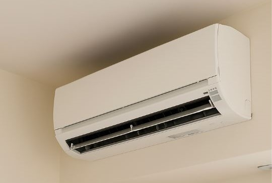
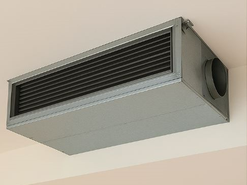
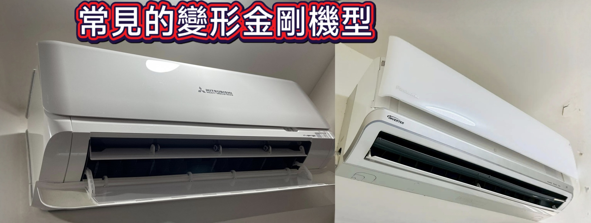

冷氣清洗 預約表單
冷氣類型
*
分離式冷氣 
吊隱式冷氣 
清洗數量
*
1 台
2 台
3 台
4 台
5 台
5 台以上
室內機所在樓層（可複選）
*
1 樓
2 樓
3 樓
4 樓
5 樓
5 樓以上
冷氣品牌（可複選）
*
HITACHI日立冷氣
Panasonic 國際牌
DAIKIN 大金冷氣
MITSUBISHI 三菱
FUJITSU 富士通
LG
TECO 東元
SANLUX 三洋
SAMPO 聲寶
Heran 禾聯
Kolin 歌林
TATUNG 大同
其他
是否為「變形金剛系列」冷氣機型？
*
常見「變形金剛系列」機型參考：

是
否
不清楚（現場由人員判斷）
回首頁
下一步 ➜ 防霉・消毒【加購服務專區】